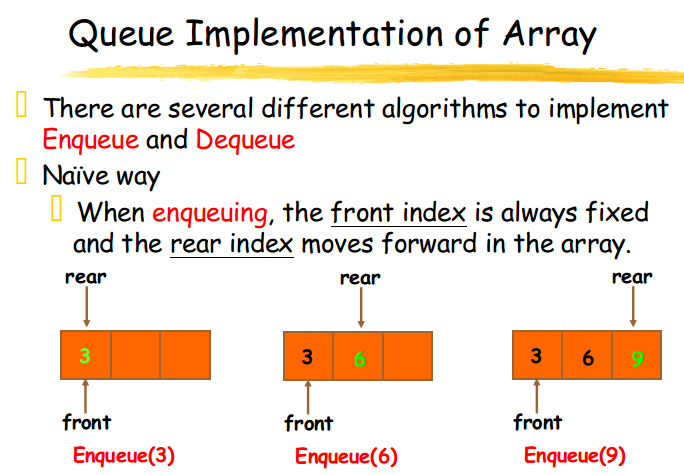
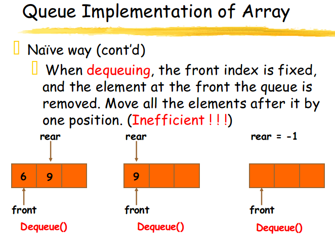
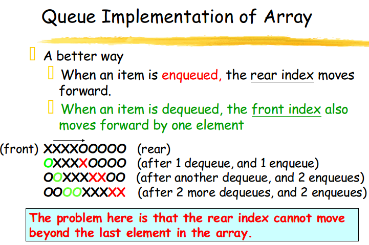
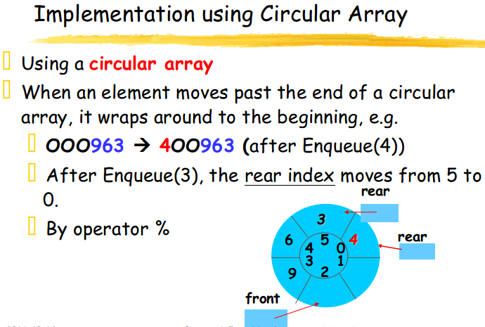
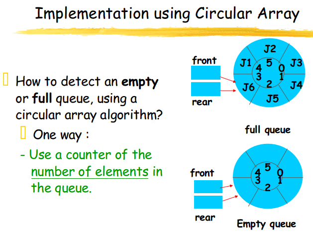
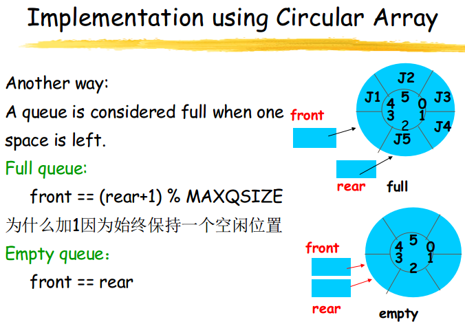
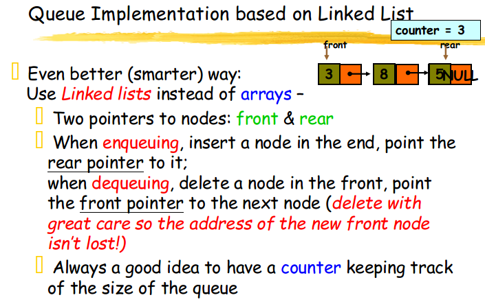
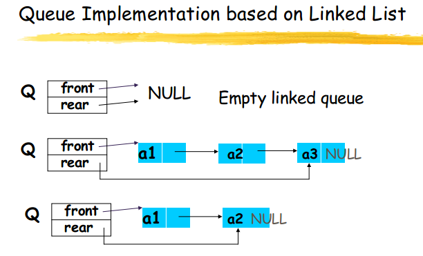

Stacks and Queues
1. Stack
A stack is a list in which insertion and deletion take place at the same end
- This end is called top
- The other end is called bottom
Stacks are known as LIFO (Last In, First Out) lists.
- The last element inserted will be the first to be retrieved.
1.1 Data Structures -- Stacks
Operations of Stack
- IsEmpty: return true if stack is empty, return false otherwise
- IsFull: return true if stack is full, return false otherwise
- top: return the element at the top of stack
- Push: add an element to the top of stack
- Pop: delete the element at the top of stack
- displayStack: print all the data in the stack
1.2 Implementation of Stacks
Any list implementation could be used to implement a stack
- Arrays
- static: the size of stack is given initially
- Linked lists
- dynamic: never become full
1.2.1 Array Implementation of Stacks
Attributes of Stack:
- stacksize: the max size of stack
- top: the Address of the top element of stack
- base: points to structure storing elements of stack
ADT of Stacks Implmented by Array
1 |
|
1.2.2 Implementation based on Linked List
1 |
|
2. Queue
2.1 Queue ADT
Attributes of Queue
- front/rear: front/rear index
- counter: number of elements in the queue
- maxSize: capacity of the queue
- values: points to structure storing elements of the queue
Operations of Queue
- IsEmpty: return true if queue is empty, return false otherwise
- IsFull: return true if queue is full, return false otherwise
- Enqueue: add an element to the rear of queue
- Dequeue: delete the element at the front of queue
- DisplayQueue: print all the data
2.2 Implementation of Queue
- Just as stacks can be implemented as arrays or linked lists, so with queues.
- Dynamic queues have the same advantages over static queues as dynamic stacks have over static stacks
2.2.1 Array Implementation
     
注意：front是空的，队列的第一个元素是(front+1)%maxSize；
code 1
2
3
4
5
6
7
8
9
10
11
12
13
14
15
16
17
18
19
20
21
22
23
24
25
26
27
28
29
30
31
32
33
34
35
36
37
38
39
40
41
42
43
44
45
46
47
48
49
50
51
52
53
54
55
56
57
58
59
60
61
62
63
64
65
66
67
68
69
70
using namespace std;
template <class Type>
class Queue
{
private:
int front, rear;
Type *elements;
int maxSize;
public:
Queue(int size = 11);
~Queue(){ delete []elements; }
void EnQueue(const Type& item);
Type DeQueue();
Type GetFront();
void MakeEmpty(){ front = rear = 0; }
int IsEmpty() const { return front == rear; }
int IsFull() const { return (rear+1)%maxSize == front; }
int Length() const { return (rear-front+maxSize)%maxSize; }
};
template <class Type>
Queue<Type>::Queue(int sz):front(0),rear(0),maxSize(sz)
{
elements = new Type[maxSize];
assert(elements!=0);
}
template <class Type>
void Queue<Type>::EnQueue(const Type& item)
{
assert(!IsFull());
rear = (rear+1)%maxSize;
elements[rear] = item;
}
template <class Type>
Type Queue<Type>::DeQueue()
{
assert(!IsEmpty());
front = (front+1)%maxSize;
return elements[front];
}
template <class Type>
Type Queue<Type>::GetFront()
{
assert(!IsEmpty());
return elements[(front+1)%maxSize];
}
int main(int argc, char *argv[])
{
Queue<int> q;
for(int i = 0; i < 10; ++i)
{
q.EnQueue(i);
}
for(int i = 0; i < 10; ++i)
{
cout<<q.DeQueue()<<" ";
}
cout<<endl;
return 0;
}
2.2.2 Linked List Implementation
 
code 1
2
3
4
5
6
7
8
9
10
11
12
13
14
15
16
17
18
19
20
21
22
23
24
25
26
27
28
29
30
31
32
33
34
35
36
37
38
39
40
41
42
43
44
45
46
47
48
49
50
51
52
53
54
55
56
57
58
59
60
61
62
63
64
65
66
67
68
69
70
71
72
73
74
75
76
77
78
79
80
81
82
83
84
85
86
87
88
89
90
91
92
93
94
95
96
97
98
using namespace std;
template <class Type> class Queue;
template <class Type> class QueueNode
{
friend class Queue<Type>;
private:
Type data;
QueueNode<Type> *link;
QueueNode(Type d = 0, QueueNode<Type> *l = NULL):data(d),link(l){}
};
template <class Type> class Queue
{
public:
Queue():rear(NULL),front(NULL){}
~Queue();
void EnQueue(const Type& item);
Type DeQueue();
Type GetFront();
void MakeEmpty();//实现与~Queue()相同
int IsEmpty() const { return front==NULL; }
private:
QueueNode<Type> *front, *rear;//队列指针
};
template <class Type>
Queue<Type>::~Queue()
{
//队列的析构函数
QueueNode<Type> *p;
while(front != NULL)
{
//逐个结点释放
p = front;
front = front->link;
delete p;
}
}
template <class Type>
void Queue<Type>::EnQueue(const Type& item)
{
//将新元素item插入到队列的队尾
if(front == NULL)//空，创建第一个结点
{
front = rear = new QueueNode<Type>(item,NULL);
}
else
{
rear = rear->link = new QueueNode<Type>(item,NULL);
}
}
template <class Type>
Type Queue<Type>::DeQueue()
{
assert(!IsEmpty());
//删去队头结点，并返回队头元素的值
QueueNode<Type> *p = front;
Type retValue = p->data;
front = front->link;
if(front == NULL)
{
rear = NULL;
}
delete p;
return retValue;
}
template <class Type>
Type Queue<Type>::GetFront()
{
//若队列不空，则函数返回队头元素的值；若队空，则函数返回队头元素的值0
assert(!IsEmpty());
return front->data;
}
int main(int argc, char *argv[])
{
Queue<int> q;
for(int i = 0; i < 10; ++i)
{
q.EnQueue(i);
}
for(int i = 0; i < 10; ++i)
{
cout<<q.DeQueue()<<" ";
}
cout<<endl;
return 0;
}